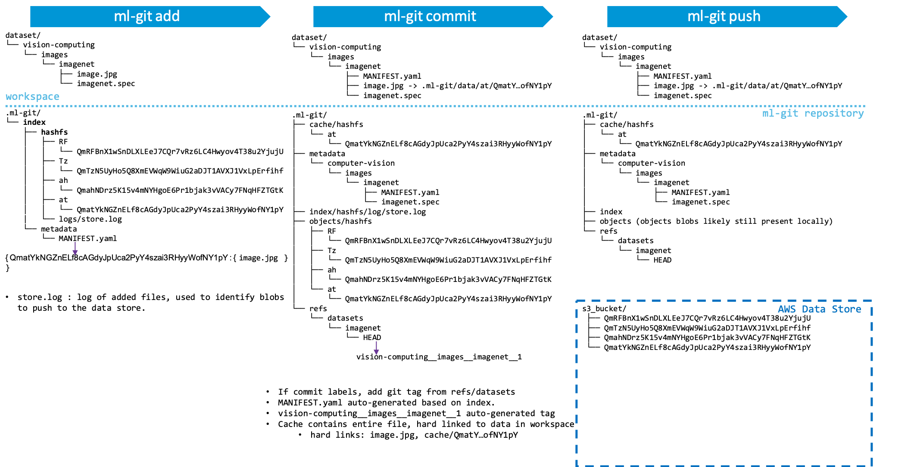
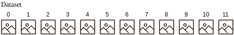
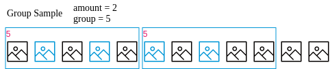
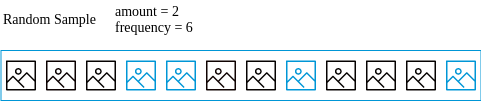
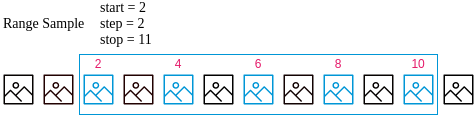

ML-Git: architecture and internals¶
Metadata & data decoupling¶
ML-Git's first design concept is to decouple the ML entities' metadata management from the actual data. So, the tool has two main layers:
-
The metadata management, is responsible for organize the ML entities (Models, Datasets, and Labels) through specification files. Then, these files are managed by a git repository to store and retrieve versions of the ML entities.
-
The data store, is responsible to keep the files of the ML entities.
 |
|---|
| Figure 1. Decoupling Metadata & Data Management Layers |
Content Addressable Storage for ML-Git¶
ML-Git has been implemented as a Content Addressable Storage (CAS), meaning that we can retrieve the information based on the content and not based on the information's location.
 |
|---|
| Figure 2. Self-Describing Content-Addressed ID |
Figure 2 shows the basic principle of multihash to obtain a Content Identifier (CID) which is used under the hood by ML-Git to implement its CAS layer.
In a nutshell, CID is a self-describing content-addressed identifier that enables natural evolution and customization over simple and fixed cryptographic hashing schemes. An argument why multihash is a valuable feature is that any cryptographic function ultimately ends being weak. It's been a challenge for many software to use another cryptographic hash (including git). For example, when collisions have been proven with SHA-1.
Summarizing, a CID is:
- A unique identifier/hash of “multihash” content.
- Encoding the digest of the original content enabling anyone to retrieve thatcontent wherever it lies (through some routing).
- Enabling the integrity check of the retrieved content (thx to multihash and the encoded digest).
 |
|---|
| Figure 3. IPLD - CID for a file |
There are a few steps to chunk a file to get an IPLD - CID format:
- Slide the file in piece of, say, 256KB.
- For each slice, compute its digest (currently, ml-git uses sha2-256).
- Obtain the CID for all these digests. These slice of files will be saved in a data store with the computed CID as their filename.
- Build a json describing all the chunks of the file.
- Obtain the CID of that json. That json will also be saved in the data store with the computed CID as its filename.
Note that this last CID is the only piece of information you need to keep to retrieve the whole image.jpg file. And last but not least, one can ensure the integrity of the file while downloading by computing the digests of all downloaded chunks and checking against the digest encoded in their CID.
Below, you can find useful links for more information on:
Why slicing files in chunks?¶
IPFS uses small chunk size of 256KB … Why?
- security - easy to DOS nodes without forcing small chunks
- deduplication - small chunks can dedup. big ones effectively dont.
- latency - can externalize small pieces already (think a stream)
- bandwidth - optimize the use of bandwidth across many peers
- performance - better perf to hold small pieces in memory. Hash along the dag to verify integrity of the whole thing.
The big DOS problem with huge leaves is that malicious nodes can serve bogus stuff for a long time before a node can detect the problem (imagine having to download 4GB before you can check whether any of it is valid). This was super harmful for bittorrent (when people started choosing huge piece sizes), attackers would routinely do this, very cheaply - just serve bogus random data. This is why smaller chunks are used in our approach.
ML-Git high-level architecture and metadata¶
 |
|---|
| Figure 4. ML-Git high-level architecture and metadata relationships |
So IPLD/CID has been implemented on top of the S3 driver. The chunking strategy is a recommendation to turn S3 interactions more efficient when dealing with large files. It's also interesting to note that if ML-Git implements a Thread pool to concurrently upload & download files to a S3 bucket. Last, it would be possible to further accelerate ML-Git interactions with a S3 bucket through the AWS CloudFront. (not implemented yet)
ML-Git baseline performance numbers¶
CamSeq01 under ML-Git¶
- CamSeq01 size : 92MB
- Locations: website in Cambridge -- S3 bucket in us-east-1 -- me in South Brazil
- Download from website: ~4min22s
- Upload to S3 with ml-git : 6m49s
- Download to S3 with ml-git : 1m11s
MSCoco (all files) under ML-Git¶
- MSCoco :
- Size : 26GB
- Number of files : 164065 ; chunked into ~400-500K blobs (todo: exact blob count)
- Locations: original dataset: unknown -- S3 bucket in us-east-1 -- me in South Brazil
- Download from website: unknown
- Upload to S3 with ml-git : 12h30m
- Download to S3 with ml-git : 10h45m
MSCoco (zip files) under ML-Git¶
- MSCoco :
- Size : 25GB
- number of files : 3 (train.zip, test.zip, val.zip) ; 102299 blobs
- Locations: original dataset: unknown -- S3 bucket in us-east-1 -- me in South Brazil
- Download from website: unknown
- Upload to S3 with ml-git : 4h35m
- Download to S3 with ml-git : 3h39m
A couple of comments:
- Even though Python GIL is a challenge for true concurrency in the Python interpreter, it still is very helpful and provides a significant improvement for ML-Git performance.
- Not surprisingly, the number of files will affect the overall performance as it means there will be many more connections to AWS. However, ML-Git have an option to download some dataset partially (checkout with sampling) to enable CI/CD workflows for which some ML engineers may run some experiments locally on their own machine. For that reason, it is interesting to avoid downloading the full dataset if it's very large. This option is not applicable if the data set was loaded as some zip files.
ML-Git add, commit, push commands internals¶
|  |
|---|
| Figure 5. ML-Git commands internals |
Description ML-Git internal commands¶
Commands:¶
Display help information about ML-Git commands.
ml-git --help
Show version passed as parameter in click function.
ml-git --version
ml-git <ml-entity> add
ml-git add search for metadata (.spec file) inside ml-git index corresponding to ml-entity-name (mandatory use):
ml-git_project/
└── .ml-git/
| └── <ml-entity>/
| └── index/
| └── metadata/
| └── <ml-entity-name>/ <-- Search .spec file
| ├── <ml-entity-name>.spec
└── <ml-entity>/
Then compares the tag of .spec file with the tag of git repository:
ml-git_project/
└── .ml-git/
| └── <ml-entity>/
| └── index/
| | └── metadata/
| | └── <ml-entity-name>/
| | ├── <ml-entity-name>.spec
| └── metadata/ <- Check tag in git repository
└── <ml-entity>/
If the ml-git tag doesn't exist in git repository, ml-git create INDEX.yaml and MANIFEST.yaml:
ml-git_project/
└── .ml-git/
| └── <ml-entity>/
| └── index/
| | └── metadata/
| | └── <ml-entity-name>/
| | ├── <ml-entity-name>.spec
| | ├── INDEX.yaml <-- INDEX.yaml created.
| | ├── MANIFEST.yaml < -- Manifest created.
| └── metadata/ <- Check tag in git repository
└── <ml-entity>/
The content of MANIFEST.yaml is a set of added multihash's files.
Then ml-git caches the file with hard links in cache path and add chunked files in objects:
ml-git_project/
└── .ml-git/
| └── <ml-entity>/
| └── index/
| | └── metadata/
| | └── <ml-entity-name>/
| | ├── <entity-name>.spec
| | ├── INDEX.yaml <-- INDEX.yaml created.
| | ├── MANIFEST.yaml < -- Manifest created
| └── metadata/
| └── cache/
| └── hashfs/ <- Hard link of chunked files
| └── objects/
| | └── hashfs/ <-- Chunk files
└── <ml-entity>/
MANIFESTEST.yaml structure example:
zdj7WWMZbq7cgw76BGeqoNUGFRkyw59p4Y6zD5eb8cyWL6MW5: !!set
data/1.jpg: null
zdj7WWgUF7spcvxkBEN49gh44ZUMzbYMG9Mm5RPGU8bsXEDTu: !!set
data/test.txt: null
zdj7WX8pZHGEAHXuzdJc2dwRXpyABuZznSx3BW867DA53Vksf: !!set
data/8.jpg: null
zdj7WYF38pFqHrvQPnD3FXMw76UDbMaZkSXJ4qMZci1nxWqiU: !!set
data/2.jpg: null
INDEX.yaml structure example:
data/1.jpg:
ctime: 1582208519.35017 <-- Creation time.
hash: zdj7WWMZbq7cgw76BGeqoNUGFRkyw59p4Y6zD5eb8cyWL6MW5
mtime: 1582208519.3581703 <-- Modification time.
status: a <-- Status file, (a, u, c)
data/test.txt:
ctime: 1582208519.3521693
hash: zdj7WWgUF7spcvxkBEN49gh44ZUMzbYMG9Mm5RPGU8bsXEDTu
mtime: 1582208519.3561785
status: a
data/8.jpg:
ctime: 1582208519.3531702
hash: zdj7WX8pZHGEAHXuzdJc2dwRXpyABuZznSx3BW867DA53Vksf
mtime: 1582208519.4149985
status: a
data/2.jpg:
ctime: 1582208519.3551724
hash: zdj7WYF38pFqHrvQPnD3FXMw76UDbMaZkSXJ4qMZci1nxWqiU
mtime: 1582208519.5029979
status: a
ml-git <ml-entity> branch
Search for HEAD file in:
ml-git_project/
└── .ml-git/
| └── <ml-entity>/
| └── index/
| └── metadata/
| └── cache/
| └── refs/
| └── <ml-entity-name>/
| ├── HEAD <-- Search here.
└── <ml-entity>/
Parse HEAD file as yaml and list the tags and their corresponding SHA-1.
HEAD structure example:
computer-vision__images__imagenet8__1: 00da0d518914cfaeb765633f68ade09a5d80b252
ml-git <ml-entity> checkout
ml-git (dataset|labels|model) checkout ML_ENTITY_TAG|ML_ENTITY
You can use this command by passing a specific tag or just the name of the entity as an argument.
If you use the name of the entity, ml-git will checkout the latest available version of that entity.
If you use a tag, the ml-git break up the ML_ENTITY into categories, specname and version, if the ML_ENTITY_TAG is the current tag, the command show the message "Repository: already at tag [\<ml-entity-tag>]", otherwise execute git checkout to the ML_ENTITY_TAG, then verify if cache has tag's objects:
ml-git_project/
└── .ml-git/
└── <ml-entity>/
└── cache/
└── hashfs/ <-- Objects here
When objects not found in cache, the command download the blobs from data store to the workspace:
ml-git_project/
└── .ml-git/
| └── <ml-entity>/
| └── cache/
| └── hashfs/
└── <ml-entity>/
└── <categories>*/
└── <ml-entity-name>/ < -- Workspace
When objects is found in cache, the command update the objects hard link to the workspace:
ml-git_project/
└── .ml-git/
| └── <ml-entity>/
| └── cache/ <-- Check here
└── <ml-entity>/
└── <categories>*/
└── <ml-entity-name>/ <-- Update here
Then update the HEAD with ML_ENTITY_TAG and SHA-1, then execute git checkout to branch master.
ml-git \<ml-entity> checkout \<ml-entity-tag> [--sample-type=\<sample>] [--sampling] [--seed]¶
This command has three types of sampling options available only for dataset: --sample-type=group --seed,--sample-type=random --seed,--sample-type=range .
We use random.sample(population, k) to return a sample of the size k from the population elements. We use random.seed() to set the seed so that the sample generated by random.sample() can be reproduced between experiments. We use the range() object to take samples from a given range.
Note:
If you use this option ml-git will not allow you to make changes to the entity and create a new tag.
Exemple:¶

Let's assume that we have a dataset that contains 12 files.
ml-git dataset checkout computer-vision__images__dataset-ex__22 --sample-type=group --sampling=2:5 --seed=1 : This command selects 2 files randomly from every group of five files to download.

ml-git dataset checkout computer-vision__images__dataset-ex__22 --sample-type=random --sampling=2:6 --seed=1 : This command makes a sample = (amount * len (dataset))% frequency ratio, sample = 4, so four files are selected randomly to download.

ml-git dataset checkout computer-vision__images__dataset-ex__22 --sample-type=range --sampling=2:11:2 : This command selects the files at indexes generated by range(start=2, stop=11, step=2).

ml-git <ml-entity> commit
Firstly commit verifies ml-git tag existence, then updates status file in .ml-git/<ml-entity>/index/metadata/<ml-entity-name>/INDEX.yaml and merge the metadata .ml-git/<ml-entity>/index/metadata/<ml-entity-name>/MAFINEST.yaml with .ml-git/<ml-entity>/metadata/<ml-entity-name>/MAFINEST.yaml.
Update INDEX.yaml:
data/1.jpg:
ctime: 1582208519.35017
hash: zdj7WWMZbq7cgw76BGeqoNUGFRkyw59p4Y6zD5eb8cyWL6MW5
mtime: 1582208519.3581703
status: a <- Change status 'a' to 'u'.
data/10.jpg:
ctime: 1582208519.3561785
hash: zdj7WZrTe7SU5oFQc8kr1kNiAkb5TBeMP1vgcXM1fvfgn5jq5
mtime: 1582208519.6050372
status: u
data/2.jpg:
ctime: 1582208519.3551724
hash: zdj7WYF38pFqHrvQPnD3FXMw76UDbMaZkSXJ4qMZci1nxWqiU
mtime: 1582208519.5029979
status: u
Merge the metadata .ml-git/<ml-entity>/index/metadata/<ml-entity-name>/MAFINEST.yaml with .ml-git/<ml-entity>/metadata/<ml-entity-name>/MAFINEST.yaml:
ml-git_project/
└── .ml-git/
| └── <ml-entity>/
| └── index/
| | └── metadata/
| | └── <ml-entity-name>/
| | ├── MANIFEST.yaml < -- (1) Get data from here
| └── metadata/
| └── <categopries>*/
| ├── MANIFEST.yaml < -- Union data (1) here, and delete (1).
└── <ml-entity>/
Get content of \<ml-entity-name>.spec (structure with representational values):
dataset:
categories:
- computer-vision
- images
mutability: strict
manifest:
store: s3h://mlgit-datasets
name: imagenet8
version: 1
And insert new attribute:
dataset:
categories:
- computer-vision
- images
mutability: strict
manifest:
files: MANIFEST.yaml
store: s3h://mlgit-datasets
name: imagenet8
version: 1
Then save file in:
ml-git_project/
└── .ml-git/
| └── <ml-entity>/
| └── index/
| | └── metadata/
| | └── <ml-entity-name>/
| | ├── MANIFEST.yaml
| | ├── <ml-entity-name>.spec < -- Copy content and change
| └── metadata/
| └── <categopries>*/
| ├── MANIFEST.yaml
| ├── <ml-entity-name>.spec < -- Save here
└── <ml-entity>/
After committing the .spec file and MANIFEST.yaml, ml-git updates the HEAD of repository with tag's SHA-1.
HEAD structure:
computer-vision__images__imagenet8__1: 00da0d518914cfaeb765633f68ade09a5d80b252
ml-git_project/
└── .ml-git/
| └── <ml-entity>/
| └── index/
| | └── metadata/
| | └── <entity-name>/
| | ├── MANIFEST.yaml
| | ├── <entity-name>.spec < -- Copy content and change
| └── refs/
| | └── <ml-entity-name>/
| | ├── HEAD <-- Update tag with SHA-1 here.
| └── metadata/
| └── <categopries>*/
| ├── MANIFEST.yaml
| ├── <ml-entity-name>.spec < -- Save here
└── <ml-entity>/
* Categories path is a tree of categories paths described in .spec file. (Ex: categories/images/MANIFEST.yaml).
ml-git <ml-entity> create
ml-git (dataset|labels|model) create ARTEFACT_NAME
Create the the workspace structure as follow:
ml-git_project/
└── .ml-git/
└──config.yaml
<ml-entity>
└── ARTEFACT_NAME/
└── data/
└── ARTEFACT_NAME.spec
└── README.md
The parameters passed --category and --version are used to fill the spec file.
The parameter --mutability must be used to define the entity's mutability, which can be: strict, flexible, mutable.
If you want to know more about each type of mutability and how it works, please take a look at mutability helper documentation.
The parameter --import is used to import files from a src folder to data folder.
The optional parameter --wizard-questions if passed, ask interactive questions at console for git & store configurations and update the config.yaml file.
The parameter --store-type must be used to define the entity's storage, which can be: s3h, azureblobh, gdriveh.
The parameter --import-url is used to import files from Google Drive to data folder.
Using this option it will be necessary to inform the path to your google drive credentials through the credentials-path argument.
In addition, you can use the --unzip option to unzip the files imported.
ml-git <ml-entity> export
This command allows you to export files from one store (S3|MinIO) to another (S3|MinIO).
ml-git (dataset|labels|model) export ML_ENTITY_TAG BUCKET_NAME
Initially, it checks if the user is in an initialized ml-git project. With the entity tag, --credentials, --region, --endpoint, --retry and bucket name arguments, ml-git connects to the store (S3|MinIO) bucket. Then the files are exported to the target store (S3|MinIO) bucket.
ml-git <ml-entity> fetch
ml-git (dataset|labels|model) fetch ML_ENTITY_TAG
Break up the ML_ENTITY_TAG into categories, specname and version, then verify if cache has tag's objects, if not, download the blobs.
ml-git_project/
└── .ml-git/
└── <ml-entity>/
└── cache/
└── hashfs/ <-- Objects here
ml-git <ml-entity> fsck
Reads objects in:
ml-git_project/
└── .ml-git/
└── <ml-entity>/
└── index/
| └── hashfs/ <-- Objects here
└── objects/
└── hashfs/ <-- Objects here
Applies SHA2 to content of objects , uses multihash to generate the CID, and compares the CID with the file name, if it is different it mean that the file is corrupted, so ml-git fsck show the number of corrupted files and in which directory. When object is valid but not in originally directory, ml-git accept that it's corrupted.
This command allows you to download a file or directory from the S3 bucket.ml-git <ml-entity> import
ml-git (dataset|labels|model) import BUCKET_NAME ENTITY_DIR
Initially checks if the user is in an initialized ml-git project. With the --credentials, --region (optional), --path and bucket name arguments ml-git connects to the S3 bucket. The S3 files for the file or directory specified in --path or --object will be downloaded. The files will be saved in the directory specified by the user in ENTITY_DIR, if not exists, the path will be created.
ml-git <ml-entity> init
When ml-git init is executed, it will read .ml-git/config.yaml to get the git repository url. ml-git will create directory .ml-git/\<ml-entity>/metadata if doesn't exists and clone the repository into it.
ml-git_project/
└── .ml-git/
└── <ml-entity>/
└── metadata/ <-- The example command clone git repository here.
Obs: Must have executed ml-git init before, to create ml-git initial configuration files.
ml-git <ml-entity> list
That command will list all \<ml-entity> under management in the ml-git repository. To do this, ml-git goes through the metadata directory to identify the structure of categories and entities that are under management.
ml-git_project/
└── .ml-git/
| └── <ml-entity>/
| └── metadata/ <-- Check here the directory structure
| └── computer-vision/
| └── images/
| └── imagenet8/
$ ml-git dataset list
ML dataset
|-- computer-vision
| |-- images
| | |-- imagenet8
ml-git <ml-entity> log
Usage: ml-git dataset log [OPTIONS] ML_ENTITY_NAME
This command shows ml-entity-name's commit information like author, date,
commit message.
Options:
--stat Show amount of files and size of an ml-entity.
--fullstat Show added and deleted files.
--help Show this message and exit.
Example:
ml-git dataset log dataset-ex
ml-git <ml-entity> push
ml-git (dataset|labels|model) push ML_ENTITY_NAME
Verify the git global configuration, and try upload objects from local repository to data store creating a thread pool with maximum of ten workers. This process use store configuration from spec file and AWS credentials.
.spec file:
dataset:
categories:
- computer-vision
- images
manifest:
store: s3h://mlgit-datasets < -- store configuration
name: imagenet8
version: 1
Directory:
ml-git_project/
└── .ml-git/
| └── <ml-entity>/
| └── index/
| └── metadata/
| └── objects/ < -- Files to be uploaded.
└── <ml-entity>/
└── <ml-entity-name>/
├── <ml-entity-name>.spec < -- Spec file with store configuration.
After the upload process, ml-git executes git push from local repository .ml-git/dataset/metadata to the remote repository configured in config.yaml.
ml-git <ml-entity> remote-fsck
Starting point of a remote fsck is to identify all the IPLD files contained in the MANIFEST file associated with the specified artefact spec (\<ml-artefact-name>) and then executes the following steps:
- Verify the existence of all these IPLDs in the remote store
- If one IPLD does not exist and it is present in the local repository, upload it to the remote store
- If the IPLD is present in the local repository:
- Open it and identify all blobs associated with that IPLD.
- Verify the existence of these blobs in the remote store.
- If one blob does not exist and it is present in the local repository, upload it to the remote store.
- If the IPLD is NOT present in the local repository and --thorough option is set
- Download the IPLD
- Open it and identify all blobs associated with that IPLD.
- Verify the existence of these blobs in the remote store.
- If one blob does not exist and it is present in the local repository, upload it to the remote store.
[--paranoid]:
Paranoid mode adds an additional step that will download all IPLD and its associated IPLD links to verify the content by computing the multihash of all these.
[--thorough]:
Ml-git will try to download the IPLD if it is not present in the local repository to verify the existence of all contained IPLD links associated.
ml-git <ml-entity> reset
In ml-git project (as in git) we have three areas to manage and track the changes of the data.
The workspace - where the data itself is added, deleted or updated.
ml-git_project/
└── .ml-git/
└── <ml-entity>/
└──<ml-entity-name>
└──HERE
ml-git_project/
└── .ml-git/
└── <ml-entity>/
└── index/
└──HERE
└── metadata/
ml-git_project/
└── .ml-git/
└── <ml-entity>/
└── index/
└── metadata/
└──HERE
Depending how to commands are passed we manage this three areas accordingly.
The Default option is HEAD.
ml-git <ml-entity> show
Verify tag and SHA-1 in HEAD:
ml-git_project/
└── .ml-git/
└── <ml-entity>/
└── index/
└── metadata/
└── objects/
└── refs/
└── <ml-entity-name>/
├── HEAD < -- Verify tag
If tag was not found, the command return the message "Local Repository: no HEAD for [\<ml-entity-name>]", otherwise do git checkout to the tag and search for all \<ml-entity-name>.spec file in:
ml-git_project/
└── .ml-git/
└── <ml-entity>/
└── index/
└── metadata/
| └── <categories>*/
| └── <ml-entity-name>/ <-- Search all .spec file here
└── objects/
└── refs/
After found all .spec files the command show each one contents, then execute git checkout to branch master.
* Categories path is a tree of categories paths described in .spec file.
ml-git <ml-entity> status
Displays paths that have differences between the index file and the current HEAD commit, paths that have differences between the working tree and the index file, and paths in the working tree that are not tracked by ML-Git.
First is described the files tracked to be commited. Those files are those ones in the manifest file. There are two types:
- New files - Those files are at the entities directory and hard-linked with those ones at index directory. These files are also listed in manifest file.
- Deleted file. - Files who was deleted from the entities directory, but still are into the manifest file.
ml-git_project/
└── <ml-entity>/
└── <ml-entity-name>/
├── <-- Files Checked
ml-git_project/
└── .ml-git/
└── <ml-entity>/
└── index/
| └── <metadata>/
| └── <ml-entity-name> <-- Hard link poited to files located here
| └── MANIFEST.yaml <-- Files listed here
Then are described the untracked files. These files are located under the entities directory and listed if they have more than one hard-link.
ml-git <ml-entity> tag add
ml-git (dataset|model|label) tag add dataset-ex my_tag
You can use this command to associate a tag to a commit.
ml-git <ml-entity> tag list
This command lists the tags of an entity. To do this, it access the metadata of an entity to get the git repository and then executes git commands to list local tags.
ml-git_project/
└── .ml-git/
└── <ml-entity>/
└── index/
└── metadata/
└── .git/ < -- Git repository
└── objects/
└── refs/
Locate metadata directory where is git repository:ml-git <ml-entity> update
ml-git_project/
└── .ml-git/
└── <ml-entity>/
└── metadata/
└── .git < -- Git repository goes here.
Then, ML-Git execute "git pull" on "origin" to update all metadatas from remote repository.
ml-git <ml-entity> unlock
This command add read and write permissions to file or directory. So that if you are working with a flexible mutability repository you will be allowed to make changes to the unlocked file without making it corrupt. If you are working with a strict repository, changing files is not allowed, so the unlock command is not performed. In the case of a mutable repository, the files are already unlocked for modification, so it is unnecessary to execute the unlock command. You should only use this command for the flexible mutability option.
ml-git clone <repository-url>
The command clones the git repository which should contain a directory .ml-git, then initialize the metadata according to configurations. ml-git will create directory .ml-git/\<ml-entity>/metadata if doesn't exists and clone the repository into it.
ml-git_project/
└── .ml-git/
└── <ml-entity>/
└── metadata/
Options:
--folder:
The configuration files are cloned in specified folder.
--track:
The ml-git clone preserves .git folder in the same directory of cloned configuration files.
ml-git_project/
└── .ml-git/
└── <ml-entity>/
└── metadata/
└── .git
ml-git login
This command generates new Aws credentials in the /.aws directory.
Note:
Command try to load the configurations from the file .ml-git/config.yaml. ml-git repository config
If the file is found, it will show the configurations read from the file, if not it will show the default configurations in the project.
ml-git repository gc
ml-git repository gc
This command will scan the metadata in each entity's index directory to identify which objects are being used by the user's worskpace. After this check, objects that are not being used and that are contained in the cache and object directories will be removed.
ml-git_project/
└── .ml-git/
└── <ml-entity>/
└── index/
| └── metadata/
└── cache/
| └── hashfs/ <-- Objects here
└── objects/
└── hashfs/ <-- Objects here
ml-git repository init
ml-git repository init verify if the current directory has .ml-git, where configuration files goes, and if doesn't have it, ml-git will create the directory and save config.yaml inside, with the informations provided by a dict in project code.
Directory structure:
ml-git-project/
└── .ml-git/
├─── config.yaml
config.yaml structure:
dataset:
git: git@github.com:standel/ml-datasets.git <-- git project url
store:
s3: <-- store type (AWS)
mlgit-datasets: <-- bucket name
aws-credentials:
profile: mlgit
region: us-east-1
ml-git repository remote <ml-entity> add
This command load the configuration file .ml-git/config.yaml and change the attribute git to the url specified on arguments, then save it. This command require that you have executed ml-git init before.
ml-git repository remote <ml-entity> del
This command load the configuration file .ml-git/config.yaml and change the attribute git to empty, the save it.
ml-git_project/
└── .ml-git/
└── <ml-entity>/
└── metadata/
└── .git <- Change actual origin url to a blank url.
ml-git repository store add (DEPRECATED)
Usage: ml-git repository store add [OPTIONS] BUCKET_NAME
[DEPRECATED]: Add a storage BUCKET_NAME to ml-git
Options:
--credentials TEXT Profile name for storage credentials
--region TEXT Aws region name for S3 bucket
--type [s3h|s3|azureblobh|gdriveh]
Storage type (s3h, s3, azureblobh, gdriveh
...) [default: s3h]
--endpoint-url TEXT Storage endpoint url
-g, --global Use this option to set configuration at
global level
--verbose Debug mode
Example:
$ ml-git repository store add minio --endpoint-url=<minio-endpoint-url>
Use this command to add a data storage to a ML-Git project.
Note: Command deprecated, use storage instead store.
ml-git repository store del (DEPRECATED)
Usage: ml-git repository store del [OPTIONS] BUCKET_NAME
[DEPRECATED]: Delete a store BUCKET_NAME from ml-git
Options:
--type [s3h|s3|azureblobh|gdriveh] Store type (s3h, s3, azureblobh, gdriveh ...) [default:
s3h]
--help Show this message and exit.
Example:
$ ml-git repository store del minio
Note: Command deprecated, use storage instead store.
ml-git repository storage add
Usage: ml-git repository storage add [OPTIONS] BUCKET_NAME
Add a storage BUCKET_NAME to ml-git
Options:
--credentials TEXT Profile name for storage credentials
--region TEXT Aws region name for S3 bucket
--type [s3h|s3|azureblobh|gdriveh]
Storage type (s3h, s3, azureblobh, gdriveh
...) [default: s3h]
--endpoint-url TEXT Storage endpoint url
-g, --global Use this option to set configuration at
global level
--verbose Debug mode
Example:
$ ml-git repository storage add minio --endpoint-url=<minio-endpoint-url>
Use this command to add a data storage to a ML-Git project.
ml-git repository storage del
Usage: ml-git repository storage del [OPTIONS] BUCKET_NAME
Delete a storage BUCKET_NAME from ml-git
Options:
--type [s3h|s3|azureblobh|gdriveh] Storage type (s3h, s3, azureblobh, gdriveh ...) [default:
s3h]
--help Show this message and exit.
Example:
$ ml-git repository storage del minio
ml-git repository update
Usage: ml-git repository update
This command updates the metadata for all entities.
Example:
$ ml-git repository update